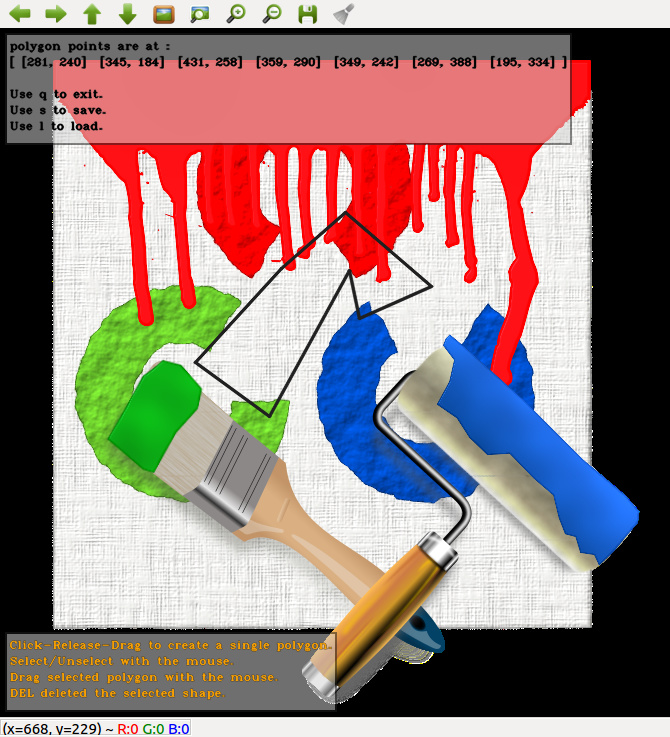

What if your user created the shapes you needed from him, and you want to save that setup?
No problem! shapes can be saved to a file and read back from that file.
Currently only the shapes of the entire Canvas can be written to a file and read from it.
Write and read of the user Polygon
This is the same program as from the previous tutorial (Creating a polygon from the GUI)
Adding only these lines to screen text:
s << "Use s to save.\n";
s << "Use l to load.";
And these lines to the switch:
case 's':
break;
case 'l':
break;
Which gives:
#include <canvascv/canvas.h>
#include <canvascv/shapes/polygon.h>
#include <opencv2/highgui.hpp>
{
vector<Point> polyPoints;
stringstream s;
s << "polygon points are at :\n[";
for (auto &v : polyPoints)
{
s << " " << v << " ";
}
s << "]\n\n";
s << "Use q to exit.\n";
s << "Use s to save.\n";
s << "Use l to load.";
}
int main(int argc, char **argv)
{
--argc;
++argv;
if (! argc)
{
Canvas::fatal("Must get a path to an image as a parameter" , -1);
}
Mat image = imread(argv[0]);
if (image.empty())
{
Canvas::fatal(string("Cannot load image ") + argv[0], -2);
}
Canvas c(
"Persistent Shapes", image.size());
"Select/Unselect with the mouse.\n"
"Drag selected polygon with the mouse.\n"
"DEL deleted the selected shape.");
{
handlePolyPoints(c, *(
Polygon*) shape);
});
{
handlePolyPoints(c, *(
Polygon*) shape);
});
{
});
namedWindow("Persistent Shapes", WINDOW_AUTOSIZE);
int key = 0;
Mat out;
do
{
switch (key)
{
case 's':
break;
case 'l':
break;
case 65535:
break;
}
} while (key != 'q');
destroyAllWindows();
return 0;
}
Notes:
- The canvascv::Canvas::readShapesFromFile() will clear itself from shapes before reading the shapes from the file.
- When executed with a path to an image, this gives you (depends on your image):

That's all for this tutorial
 1.8.11
1.8.11